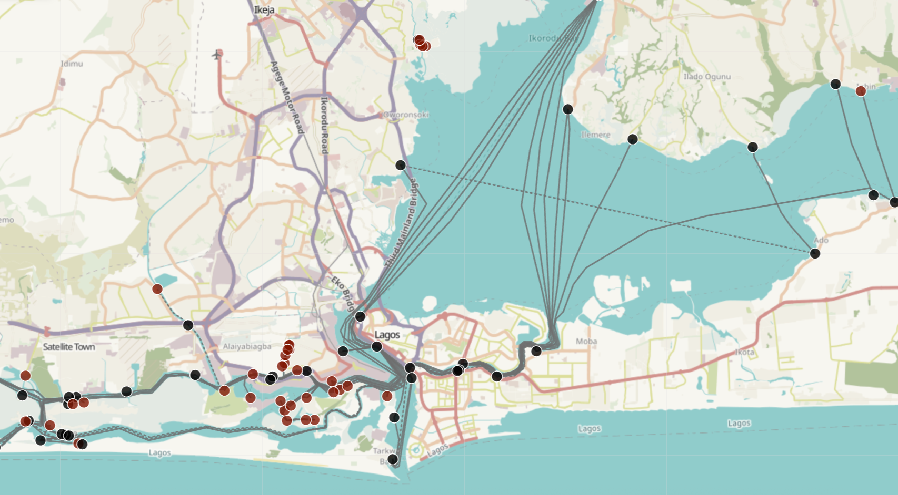
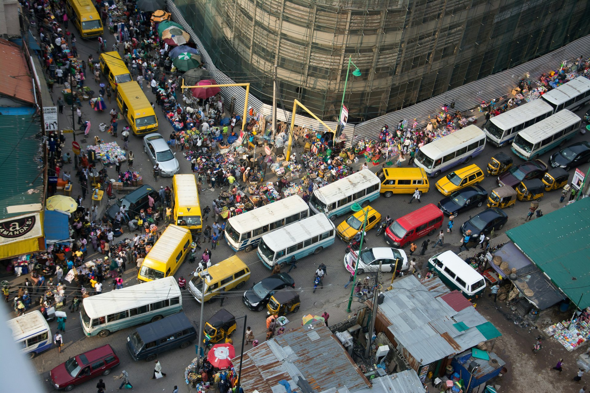

ProjectCard

Lagos Ferry Map
View Product
The first comprehensive map of Lagos' ferry system aimed at reducing road congestion
Field data collection
Geospatial data
ServiceCard
Data Collection
From scoping projects, to designing data schemas and survey forms, to conducting field work
FeatureCard

Open Data Projects
Free, public resources that solve critical data gaps
View Open Data